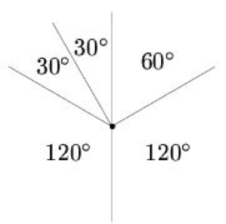

Is it possible to draw five lines from one point on a plane so that there are exactly four acute angles among the angles formed by them? Angles between not only neighboring rays, but between any two rays, can be considered.
An example of the required location of the lines is shown in the figure:

It can be done.
Source of the solution: V.O. Bugaenko "Lomonosov Tournament Competitions in Mathematics". MCNMO-CheRo. 1998.